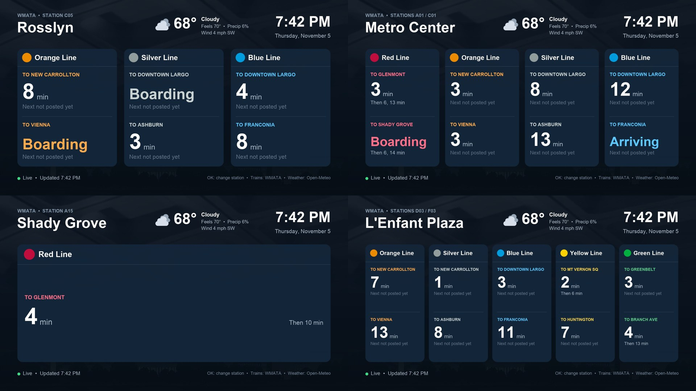

Live Metro arrivals on your TV
WMATA TV is a free Roku app that turns your TV into a station arrival board for the Washington, DC Metro.

What it does
- Any station: pick one of the system's 98 stations the first time you open the app. Press OK on the board to change it.
- Real-time trains: the next train and up to two more for every line and direction, updated every 30 seconds.
- Weather: current temperature, conditions, precipitation and wind at your station.
- Made for the TV: large, full-HD text that's readable across the room. No account or sign-in needed.
Installing the beta
WMATA TV is in a private beta. If you've been given an access code, sign in at my.roku.com, choose Add channel with a code, and enter it. The app appears on your Roku within a few minutes.
Questions or feedback
Email maxhardesty2000@gmail.com.